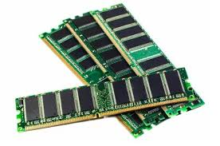
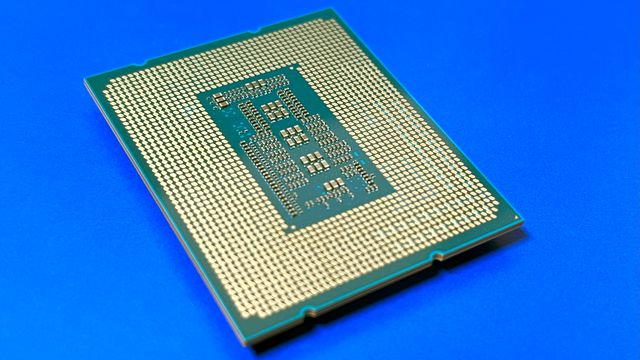
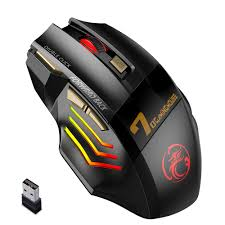
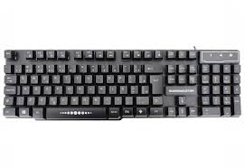
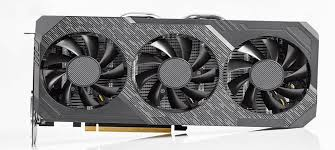

RAM
componente de hardware essencial para o funcionamento do PC

CPU
é o "cérebro" do PC, responsável por executar a maioria dos cálculos e processamento de dados

MONITOR
é um dispositivo de saída de vídeo que exibe informações visuais (textos, imagens, vídeos) geradas por um computador ou outro dispositivo eletrônico

MAUSE
é um periférico de entrada de dados que permite ao usuário controlar o cursor na tela do computador através de movimentos manuais e cliques

TECLADO
é um dispositivo de entrada com teclas que transmitem informações a um computador ou outro aparelho eletrónico

placa de video
é um componente de hardware que processa dados para gerar imagens e exibi-las em um monitor